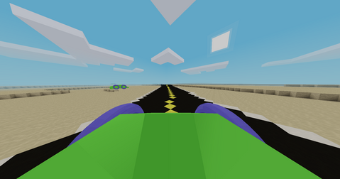

Introduction
Github repository: https://github.com/tigris-mt/roadtrip
I've begun work on a game project, smaller in scope and more relaxing than the text engine project. This new project uses the Minetest engine for voxel graphics, entities, and physics. This game, Roadtrip, is designed along the lines of The Long Drive as a post-apocalyptic roadtrip simulator and also takes inspiration from Cataclysm: Dark Days Ahead. It's written in Lua.
Minetest & Voxels
The Minetest engine provides a solid base for this type of game: procedural generation, low-poly graphics, built-in multiplayer, etc. I have quite a bit of experience with Minetest and Lua, so it's a good choice for game engine since I don't want to put too much development effort into this game. The world will consist of "voxels", blocks like in Minecraft that form the terrain, along with moveable "entities" such as the vehicles and the player.
Design
The basic design of the game is the player driving down a road in a procedurally generated environment. The player must survive (food, water, gasoline/electricity, shelter, etc.) as long as possible while enjoying the view and trip.
Like The Long Drive, Roadtrip will have a long highway extending indefinitely into the distance with a randomly generated environment surrounding it, maybe including side roads or broader road networks. The prototype environment will be a desert, but it will be easy to add new biomes.
In the prototype, the road runs from the south toward the north, with turns and corners defined by an equation that returns the X (east-west) coordinate of the road based on the Z (north-south) coordinate. The current equation is defined as
local z_factor = 60 + 60 * seed_random()
local z_factor_2 = 160 + 160 * seed_random()
local x_factor = 60 + 60 * seed_random()
local function road_x(z)
return math.floor(math.sin(z / z_factor) * (math.sin(z / z_factor_2) ^ 4) * x_factor + 0.5)
endVehicles
Vehicles are the focus of Roadtrip, so they will be very customizable. Vehicles will be individual components internally, such as the chassis, the wheels, the doors, etc., which can then be installed together and the models attached to display an entire car, truck, or other vehicle.
Survival
Survival elements including hunger, thirst, weather, and fuel will drive further exploration and resource gathering. There may be enemies as well, or some other active threat.
Exploration
Resources will be available in structures off the road, in abandoned cars, or from natural resources like lakes or trees. This will encourage exploration off road, both with and without a vehicle. Terrain generation can be improved to have hills, valleys, caves, etc. to spice up the landscape.
Development Challenges
The Minetest engine is limited in a number of ways that will make development more challenging. I do think my familiarity with the engine along the engine's simplicity will make it worth it, however.
Rotation
Most noticably, if the player is attached to an object and the object rotates, the player's viewport does not rotate with the object. My workaround, rotating both at the same time, suffers from network lag causing noticable drift that the player must manually correct. I may need to contribute a feature to the engine to support this for more realistic driving.
Collision
For performance reasons, an object's collisionbox cannot extend much beyond ~3 nodes in any direction before it starts to break. This means that entities like vehicles can't be too big or their physics won't work. Again, I may need to improve the engine here, or just live with innacurate collision on large vehicles.
Hud & Controls
Implementing the HUD and controls is a bit of a challenge as the Minetest engine is geared toward a Minecraft-like game. Nevertheless, I should be able to represent the dashboard on the HUD nearly as easily as the player's own stats. Controls are also a little harder, with a limited number of keybinds available to the game. I can use movement keys for driving, and I may be able to use hotbar items for actions like shifting gears or quick access of weapons or tools.